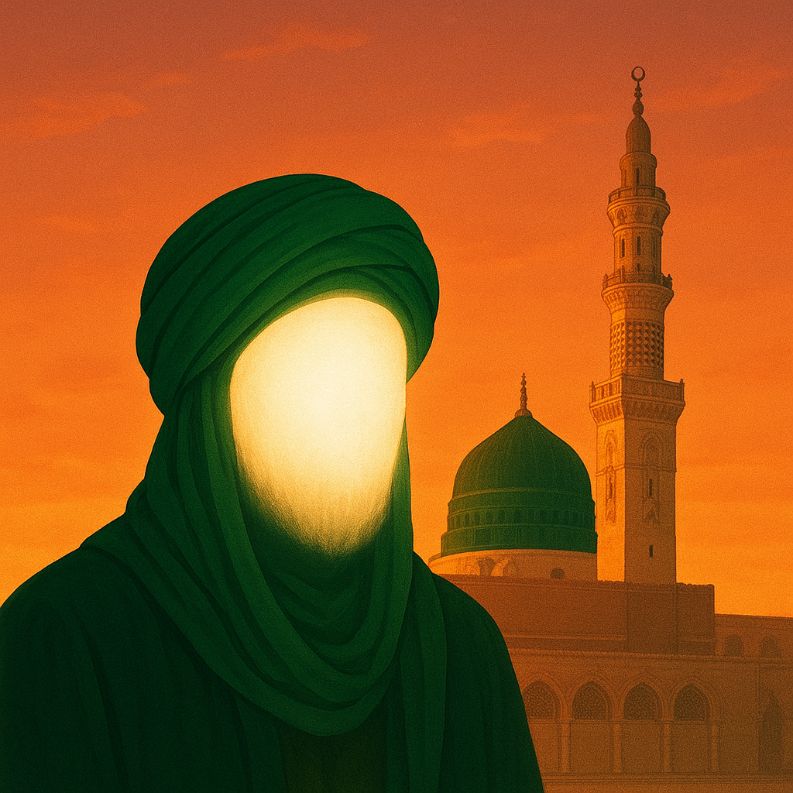

Nama lengkap: Muhammad bin Abdullah bin Abdul Muthalib
Tempat lahir: Makkah
Tahun lahir: 570 M (Tahun Gajah)
Suku: Quraisy


Rasulullah ﷺ, lahir dalam keadaan yatim.
Dibesarkan oleh ibunya Aminah, lalu oleh kakeknya Abdul Muthalib, dan pamannya Abu Thalib.
Sejak kecil dikenal jujur, penyayang, dan berakhlak mulia.
Rasulullah ﷺ, bekerja sebagai pedagang dan mendapat julukan "Al-Amin".
Menikah dengan Khadijah binti Khuwailid pada usia 25 tahun.
Menjadi contoh kejujuran dan tanggung jawab.
Pada usia 40 tahun, di Gua Hira, Malaikat Jibril datang membawa wahyu pertama:
“Bacalah dengan nama Tuhanmu yang menciptakan.” (QS. Al-‘Alaq: 1)
Rasulullah ﷺ, mulai berdakwah di Makkah secara sembunyi-sembunyi, lalu terang-terangan.
Beliau menghadapi banyak rintangan, tetapi tetap sabar dan tegar.
Atas perintah Allah, Rasulullah ﷺ, berhijrah ke Madinah.
Peristiwa ini menjadi awal penanggalan Hijriyah.
Kaum Anshar menyambut beliau dengan penuh cinta.
Rasulullah ﷺ, memimpin umat dalam perang Badar, Uhud, dan Khandaq.
Beliau menunjukkan kepemimpinan yang adil dan penuh kasih sayang.
Rasulullah ﷺ, dikenal sangat penyayang, lembut, dan pemaaf.
Aisyah berkata: “Akhlak Rasulullah adalah Al-Qur’an.”
Beliau wafat pada 12 Rabi’ul Awwal tahun 11 Hijriyah (632 M).
Dimakamkan di rumah Aisyah r.a. yang kini menjadi bagian dari Masjid Nabawi
Rasulullah ﷺ, meninggalkan Al-Qur’an dan Sunnah sebagai pedoman hidup umat Islam.
Ajarannya menjadi cahaya bagi dunia hingga akhir zaman.